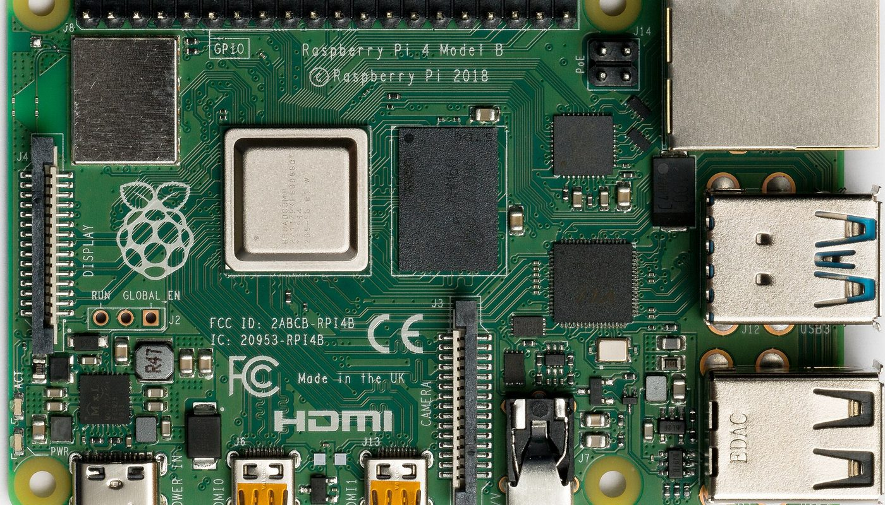
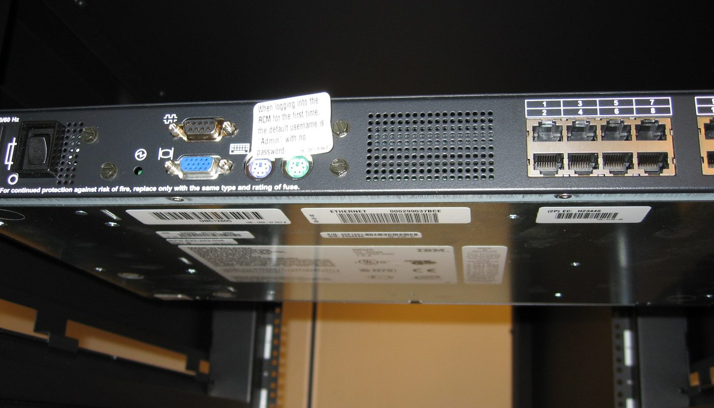

KVM over IP · aucun lien affilié sur cette page · prix relevés le 2 oct. 2026
KVM over IP maison : prendre la main sur un PC ou un serveur à distance — BIOS compris — pour ≈130 € de pièces, au lieu de 500 $ et plus

Un Raspberry Pi, une carte de capture HDMI vers USB et quelques câbles : voilà de quoi voir et piloter une machine distante comme si vous étiez devant — écran, clavier, souris, montage d'une clé USB virtuelle, bouton d'allumage — y compris avant que le système ne démarre. Le projet libre PiKVM fait ça pour ≈130 € TTC de pièces relevées le 2 octobre 2026 chez un revendeur français. Un boîtier tout fait monte à 264-366 €. Un KVM IP commercial démarre à 509,57 $. Ce que les comparatifs taisent : la limite de rafraîchissement du bricolage, la facture des licences constructeur, et le fait que les modèles les moins chers ne sont pas des PiKVM.
Aucun lien affilié sur cette page — voir comment ça marche Prix lus le 2 oct. 2026 PiKVM : 10 368 étoiles GitHub, GPL-3.0
En bref
- Le besoin réel : reprendre la main sur un PC ou un serveur qui ne répond plus — écran figé, système à réinstaller, BIOS à corriger — depuis un autre poste, sans être sur place. Un « bureau à distance » classique ne le fait pas : il faut que le système soit déjà démarré.
- La solution libre : PiKVM (dépôt public 10 368 étoiles, GPL-3.0, dernier développement le 21 septembre 2026, 573 forks) transforme un Raspberry Pi en KVM over IP.
- Le montage DIY, en euros : ≈129,90 € TTC chez un revendeur français le 2 oct. 2026 — Pi 4 Modèle B 3GB 97,50 € + carte de capture HDMI vers USB 12,00 € + alimentation USB-C 9,60 € + carte micro-SD 16 Go 10,80 €.
- Le clé-en-main, en France, le même jour : PiKVM V4 Mini pré-assemblé 264,00 € et PiKVM V4 Plus pré-assemblé 360,00 à 366,00 € selon la boutique — dont une en rupture de stock.
- Le commercial, en dollars : Lantronix Spider dès 509,57 $, ATEN CN9850 vers 745 $, un ATEN 8 ports entre 1 478 $ et 1 643 $. L'écart de véhicule est là, pas dans la performance brute.
De quoi on parle exactement
Un KVM over IP (de l'anglais Keyboard, Video, Mouse) est un appareil qui se branche entre vous et une machine : il capture sa sortie vidéo, émule son clavier et sa souris, et vous rend tout cela dans une page web. La différence avec un logiciel de prise en main à distance (VNC, RDP, TeamViewer) est décisive : le KVM se place hors du système d'exploitation. Vous voyez donc l'écran dès la mise sous tension, vous pouvez entrer dans le BIOS, lancer une réinstallation par le réseau ou réparer un démarrage cassé — ce qu'aucun logiciel ne permet si la machine est plantée avant d'avoir démarré.
PiKVM est l'implémentation libre de référence. Elle existe en plusieurs formes, et le projet les distingue clairement sur sa page « DIY » :
- DIY V1 — pour un vieux Raspberry Pi 3 ou 2 : un Raspberry Pi Pico sert à émuler clavier et souris. Plus de pièces et de temps, mais une seconde vie pour du matériel ancien.
- DIY V2 — la voie conseillée aujourd'hui : un Raspberry Pi 4 (ou un Zero 2 W), un périphérique de capture vidéo et quelques composants. C'est ce montage qui donne le prix le plus bas.
- V3 HAT — une extension qui branche un Pi 4 et apporte le confort : watchdog matériel, console série, module ATX fiable, écran d'adresse IP.
- V4 / V4 Plus / V4 Mini — les versions finies, avec Compute Module 4 intégré, montées d'usine.
Autrement dit : le montage à bas coût fonctionne, mais il a des bords francs. On les liste plus bas, section « Ce que les guides oublient de dire ».
Les prix : ce qui est lu, où, et quand
Tous les montants en euros ci-dessous ont été relevés le 2 octobre 2026 sur les fiches produits de revendeurs français. Quand la fiche affichait les deux, le prix toutes taxes comprises est donné. Les montants en dollars proviennent des pages publiques des constructeurs, lus le même jour, et ne sont pas convertis en euros.
Les quatre routes, en euros TTC (relevé le 2 oct. 2026)
Barres proportionnelles aux montants ci-dessus, base à zéro. Les quatre montants sont des prix relevés sur les fiches le 2 octobre 2026, en euros, chez des revendeurs français. Le montage DIY est la somme des quatre pièces listées plus bas (97,50 + 12,00 + 9,60 + 10,80 €) ; il n'inclut pas les câbles et les fils du bouton d'allumage, non chiffrés.
| Route | Ce que c'est | Prix relevé le 2 oct. 2026 | Où |
|---|---|---|---|
| Montage DIY | Pi 4 Modèle B 3GB + carte de capture HDMI→USB + alimentation USB-C + micro-SD 16 Go | ≈129,90 € TTC (somme des pièces) | Kubii (FR) |
| Kit pré-assemblé | PiKVM V4 Mini pré-assemblé avec Compute Module 4 2 Go, x2 USB, 1 HDMI | 264,00 € | Kubii (FR) |
| Kit pré-assemblé | PiKVM V4 Plus pré-assemblé avec Compute Module 4 2 Go | 360,00 € — rupture de stock | MonRaspberry (FR) |
| Kit pré-assemblé | PiKVM V4 Plus pré-assemblé avec Compute Module 4 2 Go | 366,00 € | Kubii (FR) |
| Pièce DIY | Raspberry Pi 4 Modèle B 3GB | 97,50 € TTC | Kubii (FR) |
| Pièce DIY | Carte d'acquisition vidéo HDMI vers USB (entrée 4K 30 Hz / sortie 1080p 30 Hz) | 12,00 € | Kubii (FR) |
| Pièce DIY | Alimentation officielle USB-C 15,3 W | 9,60 € | Kubii (FR) |
| Pièce DIY | Carte micro-SD 16 Go pré-installée (Noobs) | 10,80 € | Kubii (FR) |
Deux lectures utiles. D'abord, le même boîtier n'a pas le même prix partout : le PiKVM V4 Plus se relève à 360,00 € chez l'un et 366,00 € chez l'autre, le même jour — et c'est la boutique la moins chère qui affiche une rupture de stock. Ensuite, le passage du bricolage au tout fait coûte environ le double : ≈130 € de pièces contre 264 à 366 € pour un boîtier monté d'usine avec Compute Module 4, contrôle ATX intégré et boîtier fini. Ce supplément achète du temps et du confort, pas une puissance de calcul différente.
De l'autre côté : ce que coûtent les KVM IP commerciaux
C'est le chiffre qui justifie l'exercice. Un KVM IP de marque, celui qu'on trouve dans les baies de serveurs des entreprises, se relève en dollars, sur les pages publiques des constructeurs, le 2 octobre 2026 :
Les trois routes, côte à côte
| Matériel | Prix relevé le 2 oct. 2026 | Nature |
|---|---|---|
| Lantronix Spider (KVM IP 1 port, marque) | 509,57 $ | Matériel, page du constructeur |
| ATEN CN9850 | ≈745 $ | Relevé de notre veille le même jour |
| ATEN KN1108VA (8 ports) | 1 478 $ à 1 643 $ | Relevé de notre veille le même jour |
| Licence de gestion avancée iLO / iDRAC | 200 $ à 400 $ | Relevé de notre veille le même jour |
Un montage PiKVM se situe entre 80 $ et 130 $ selon la carte utilisée (relevé de notre veille le 2 octobre 2026), et les alternatives clé-en-main libres démarrent bien plus bas : BliKVM vers 40 à 80 $ (dépôt 559 étoiles) et JetKVM annoncé 69 $ (dépôt 5 213 étoiles au 2 oct. 2026). Autrement dit, l'argument n'est pas « moins cher qu'un concurrent low-cost » — certains le sont davantage — mais « sans licence, sans compte constructeur, et sur du matériel que vous pouvez réparer vous-même ».
Ce que ça permet, concrètement

1 · Dépanner une machine qui ne démarre plus
C'est le cas qui justifie l'achat. Système corrompu, écran de BIOS, mise à jour qui a mal tourné, réinstallation à distance : un bureau à distance est inutilisable si le système ne se lance pas, alors que le PiKVM voit l'écran dès la mise sous tension. Le montage du projet permet même de monter une image ISO comme si vous branchiez une clé USB — ce que la documentation officielle appelle l'émulation de lecteur amovible.
2 · Gérer un serveur, un NAS ou un labo maison
Pour une machine rangée dans un placard ou un garage, le PiKVM évite le voyage physique à chaque incident. C'est l'usage qui a fait la réputation du projet dans les communautés de serveurs personnels et de gestion à distance.
3 · Donner une seconde vie à du matériel
La voie « DIY V1 » du projet vise explicitement les vieux Raspberry Pi 3 et 2 : un Pico pour l'USB et la machine redevient utile. C'est le montage le moins cher si le Raspberry Pi traîne déjà dans un tiroir.
Le flux, en une image
Ce que les guides oublient de dire
- Le montage bon marché n'est pas « tout 1080p 60 images ». Le projet l'écrit lui-même : le DIY V2 plafonne à 1920x1080 à 50 Hz, sans son, et « certains BIOS exigeants qui veulent du 60 Hz » peuvent ne pas s'afficher. Pour la vidéo en 60 images et l'audio, il faut une carte V3 HAT ou un V4.
- Le bouton d'allumage ne vient pas tout seul. Sur le DIY, l'ATX (allumer, éteindre, réinitialiser à distance) est à câbler sur la carte mère — le projet le marque « DIY » dans son propre tableau comparatif. Les versions V4 ont un module ATX intégré et un watchdog matériel.
- La qualité de la carte de capture change tout. Une carte d'entrée de gamme relevée à 12,00 € est donnée pour une entrée 4K à 30 Hz et une sortie 1080p à 30 Hz : ça suffit pour dépanner, pas pour du travail graphique fluide. Les cartes de meilleure facture coûtent plus cher et ne se trouvent pas dans la même fiche.
- Tout ne se contrôle pas : la protection de contenu. Les sources HDMI chiffrées (HDCP) — lecteur Blu-ray, certaines box — peuvent refuser de s'afficher sur une capture générique. Prévoyez-le pour un usage média, pas pour du dépannage serveur.
- Le Wi-Fi est en option, pas de série. Sur les V4, la fiche du revendeur précise qu'il faut ajouter une antenne externe sur le port dédié pour le Wi-Fi ; sinon c'est le câble Ethernet.
- Les clones existent, et ils sont plus connus qu'on ne croit. BliKVM (matériel libre, dépôt 559 étoiles) et JetKVM (dépôt 5 213 étoiles, GPL-2.0 au 2 oct. 2026) sont deux alternatives clé-en-main, souvent moins chères qu'un PiKVM V4. Ce ne sont pas des PiKVM : logiciels et matériels différents, à comparer avant d'acheter.
- « Rupture » veut dire rupture. Le PiKVM V4 Plus le moins cher relevé est en rupture de stock le jour même ; le second est à 6,00 € de plus. Vérifiez la disponibilité, pas seulement le prix affiché.
Trois étapes, dans cet ordre
Le seul mauvais achat vraiment fréquent : croire qu'un simple « bureau à distance » suffit, puis découvrir que la machine qu'on voulait dépanner ne démarre plus — c'est-à-dire au pire moment.
La checklist avant de choisir
- Vous voulez dépanner ou travailler ? Dépannage et BIOS : un montage DIY suffit. Usage quotidien exigeant, vidéo fluide et audio : visez un V4.
- Vérifiez la sortie de la machine cible : HDMI de préférence, sinon prévoyez un adaptateur DisplayPort ou VGA vers HDMI.
- Prévoyez le contrôle de l'alimentation si vous voulez allumer/éteindre à distance (fils ATX) : à câbler sur le DIY, intégré sur les V4.
- Contrôlez la résolution et la fréquence dont vous avez besoin : le DIY V2 s'arrête à 1080p 50 Hz, sans son.
- Regardez la disponibilité réelle, pas le prix barré : l'offre la moins chère relevée était en rupture le jour même.
- Si vous comparez, comparez le bon produit : BliKVM et JetKVM sont des alternatives clé-en-main, pas des PiKVM — mêmes usages, logiciels différents.
- Sur un simple besoin d'accès au bureau, un logiciel gratuit fait déjà le travail : le KVM over IP se justifie quand il faut voir avant le démarrage du système.
Par où commencer, concrètement
Ces liens sont ceux du projet et des revendeurs cités. Aucun n'est affilié : ils sont là pour que vous vérifiiez les prix, les montages et le logiciel à la source.
- Le projet : pikvm.org — page « DIY » (les montages V1, V2 et V3 HAT) et son dépôt public (GPL-3.0).
- Les alternatives clé-en-main : JetKVM et BliKVM — deux projets distincts de PiKVM.
- Voir un boîtier et son prix : la fiche du PiKVM V4 Plus chez Kubii (366,00 € le 2 oct. 2026) et celle du même V4 Plus chez MonRaspberry (360,00 €, en rupture).
- Voir les pièces du montage : la carte de capture HDMI vers USB (12,00 €) et un Raspberry Pi 4 chez le même revendeur.
Le réflexe qui évite le mauvais achat : décidez d'abord ce que vous devez voir — l'écran d'un système planté, ou juste un bureau qui tourne déjà.
Questions
Combien coûte un KVM over IP maison en France ?
En montage DIY, environ 129,90 € TTC de pièces relevées le 2 octobre 2026 chez un revendeur français (Raspberry Pi 4 Modèle B 3GB à 97,50 €, carte de capture HDMI vers USB à 12,00 €, alimentation USB-C à 9,60 €, micro-SD 16 Go à 10,80 €). En boîtier tout fait, un PiKVM V4 Mini pré-assemblé se relève à 264,00 € et un V4 Plus à 360,00 à 366,00 €.
Quelle différence avec un KVM IP commercial ?
Le prix. Relevés en dollars le 2 octobre 2026 : Lantronix Spider dès 509,57 $, ATEN CN9850 vers 745 $, ATEN 8 ports entre 1 478 $ et 1 643 $. À côté, un montage PiKVM se situe entre 80 $ et 130 $, et les alternatives clé-en-main libres démarrent vers 40 à 80 $. S'ajoute la licence de gestion avancée des serveurs (iLO/iDRAC), relevée entre 200 $ et 400 $.
Peut-on vraiment atteindre le BIOS et redémarrer à distance ?
Oui, c'est la raison d'être d'un KVM over IP : la capture vidéo se branche sur la sortie HDMI et le clavier/souris sont émulés en USB, donc vous voyez et pilotez la machine avant le chargement du système, BIOS/UEFI compris. Le contrôle du bouton d'allumage (ATX) passe par des fils sur la carte mère : à câbler sur le DIY, intégré sur les V4.
Faut-il un abonnement ou un compte ?
Non. Le firmware PiKVM est libre et gratuit, il se pilote depuis un navigateur sur votre réseau, sans compte ni abonnement. Le son et la vidéo en 60 images demandent du matériel plus complet (V3 HAT ou V4).
Cette page contient-elle des liens affiliés ?
Non, aucun à ce jour. Le programme du matériel importé (AliExpress, pour les cartes BliKVM/JetKVM et les adaptateurs) et celui de Pimoroni (via Shopify Collabs) sont enregistrés comme candidats : aucun compte créé, aucun lien posé. Si cela change, le lien sera étiqueté et cet encadré mis à jour.
Comment cette page est faite
- Aucun lien affilié ici. Les programmes du matériel importé (AliExpress) et de Pimoroni (Shopify Collabs) sont enregistrés comme candidats dans nos registres : aucun compte n'est créé, aucun lien n'est posé. Si un lien affilié arrive, il sera étiqueté « lien affilié » à l'endroit où il apparaît, avec
rel="sponsored", et cet encadré sera mis à jour avec la date. - Les prix en euros sont ceux que nous avons lus nous-mêmes sur les fiches des revendeurs français, le 2 octobre 2026. Les prix en dollars viennent des pages publiques des constructeurs, le même jour : ils sont donnés en dollars et ne sont pas convertis.
- Ce que nous ne savons pas est écrit comme tel : les frais de port livrés ne sont pas relevés ; la commission éventuelle d'un programme d'affiliation n'est pas connue (aucun compte ouvert) ; et le coût des câbles et des fils du contrôle ATX n'est pas chiffré dans le « ≈130 € ».
- Nous ne fabriquons aucun avis, aucun témoignage et aucune statistique. Les chiffres des projets (étoiles, licences, dates de développement) viennent de l'interface publique de GitHub, datés du 2 octobre 2026. La limite de rafraîchissement du montage DIY est citée mot pour mot depuis la page du projet.
- Corrections : si un prix a changé ou si nous nous sommes trompés, écrivez-nous, nous corrigeons et nous datons la correction.
Sources
- Interfaces publiques GitHub, lues le 2 octobre 2026 : PiKVM (pikvm/pikvm) 10 368 étoiles, 573 forks, GPL-3.0, dernière poussée le 21 septembre 2026 ; JetKVM (jetkvm/kvm) 5 213 étoiles, 400 forks, GPL-2.0, dernière poussée le 30 septembre 2026 ; BliKVM (blikvm/blikvm) 559 étoiles, 50 forks, GPL-3.0.
- pikvm.org, page « DIY », lue le 2 octobre 2026 : montages DIY V1 (Raspberry Pi 3/2 + Pico), DIY V2 (Raspberry Pi 4 ou Zero 2 W + périphérique de capture vidéo), V3 HAT, tableau comparatif des fonctions, et mention explicite de la limite « 1920x1080@50Hz […] no audio » du DIY V2.
- Kubii (revendeur français, prix en euros, fiches lues le 2 octobre 2026) : PiKVM V4 Plus pré-assemblé avec CM4 2 Go 366,00 € ; PiKVM V4 Mini pré-assemblé avec CM4 2 Go 264,00 € ; Raspberry Pi 4 Modèle B 3GB 97,50 € TTC ; carte d'acquisition vidéo HDMI vers USB (4K 30 Hz / 1080p 30 Hz) 12,00 € ; alimentation officielle USB-C 15,3 W 9,60 € ; carte micro-SD Noobs 16 Go 10,80 € ; Raspberry Pi PoE+ HAT 24,30 €.
- MonRaspberry (revendeur français, fiche lue le 2 octobre 2026) : PiKVM V4 Plus avec CM4 à 360,00 €, disponibilité « en rupture de stock ».
- buy.lantronix.com, page « Lantronix Spider », lue le 2 octobre 2026 : prix catalogue relevés 509,57 $, 509,69 $ et 529,38 $ selon la variante.
- Relevés de notre propre veille, datés du 2 octobre 2026 (fourchettes en dollars, non converties) : ATEN CN9850 ≈745 $ ; ATEN KN1108VA 8 ports 1 478–1 643 $ ; licences iLO/iDRAC 200–400 $ ; montage PiKVM DIY 80–130 $ selon la carte ; BliKVM 40–80 $ ; JetKVM 69 $.
- Photos : carte Raspberry Pi 4 Model B vue de dessus — Laserlicht, CC BY-SA 4.0 ; console KVM IBM en baie — Jemimus, CC BY 2.0. Toutes deux via Wikimedia Commons.
Avis clients
Avis sur ce guide, publiés après vérification. Chaque avis négatif reçoit une réponse publique — c'est comme ça qu'on s'améliore.
Les premiers avis seront publiés ici dès que de vrais lecteurs en enverront.